Анубис 01
SVGОСНОВНОЙ ПУЛ
ПОЛНЫЙ ПОДГОТОВЛЕННЫЙ ПУЛ · GOOGLE DRIVE
Все 120 SVG из папки «ПАНТЕОН» владельца. Исходные файлы опубликованы без перерисовки, отбора и переименования.
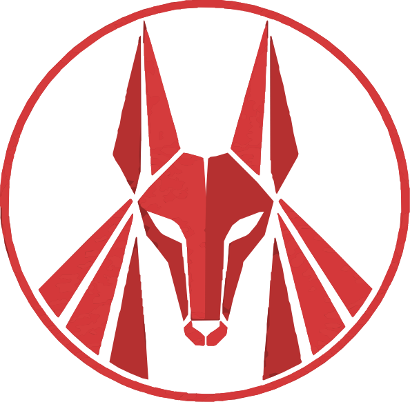
30 SVG · 10 образов × 3 варианта · исходные имена сохранены
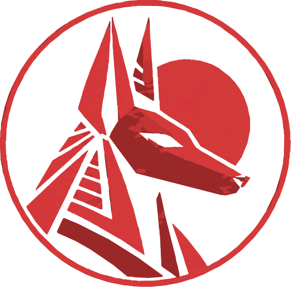
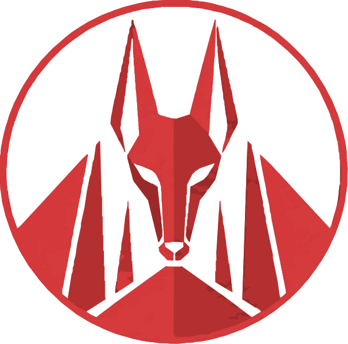
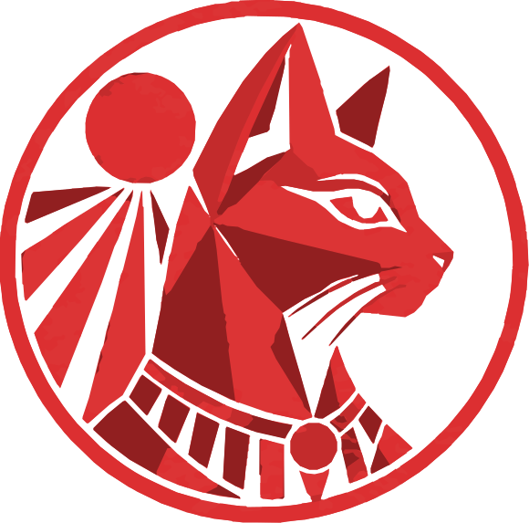
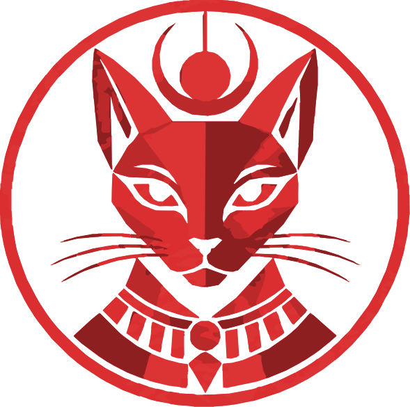
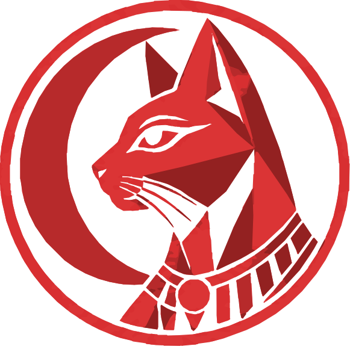
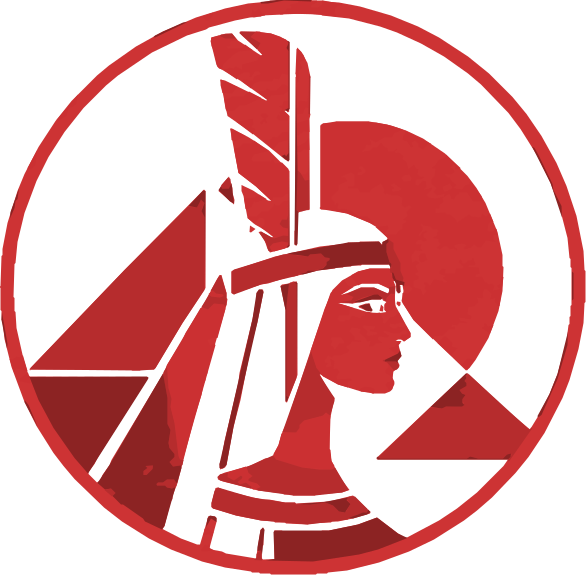
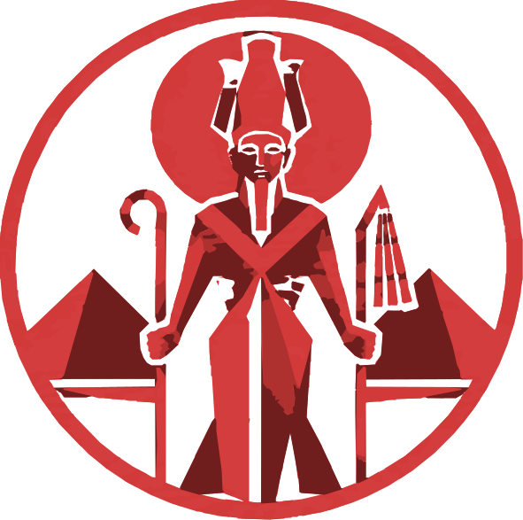
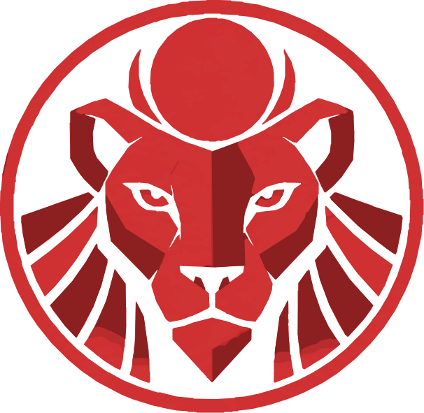
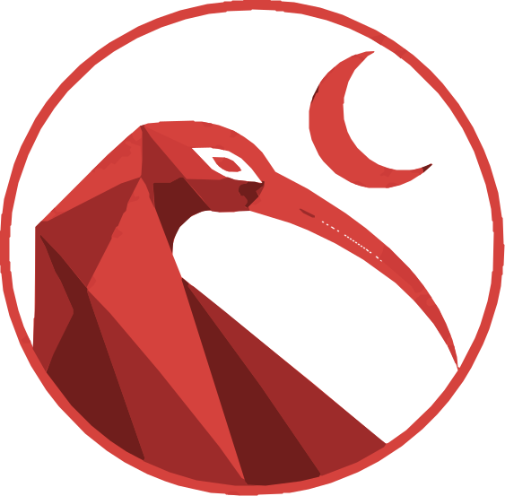
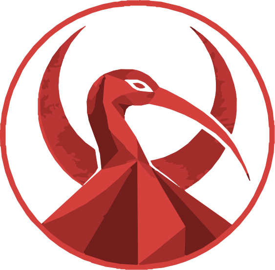
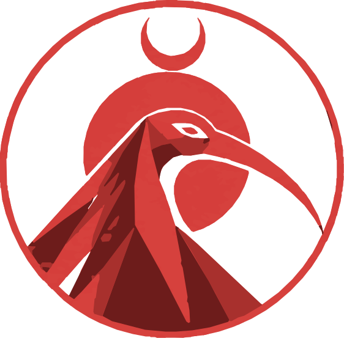
3 дополнительных варианта · исходные имена сохранены
12 образов · исходные имена сохранены
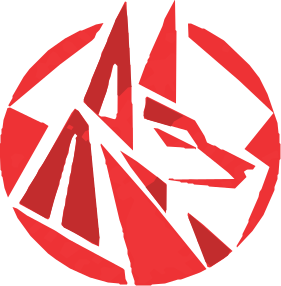
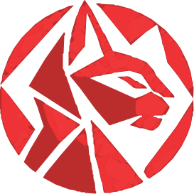
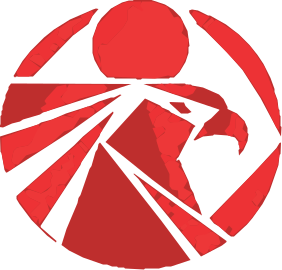
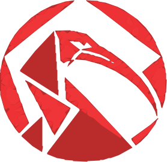
12 образов · исходные имена сохранены
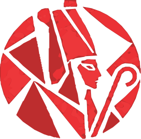
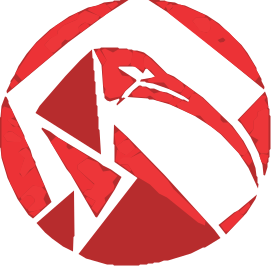
12 образов · исходные имена сохранены
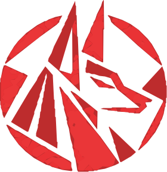
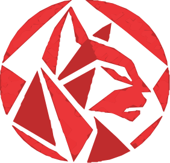
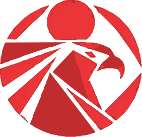
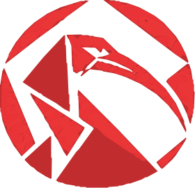
12 образов · исходные имена сохранены
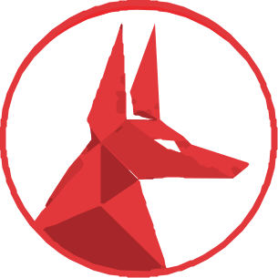
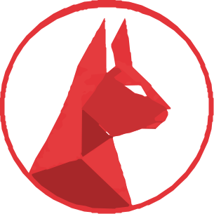
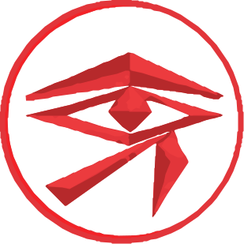
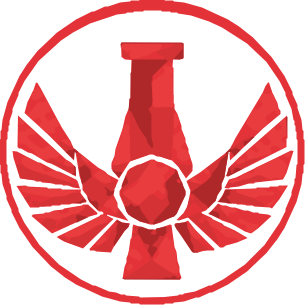
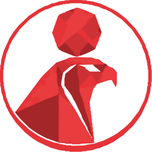
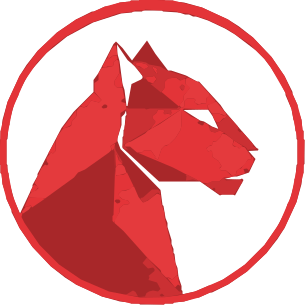
12 образов · исходные имена сохранены
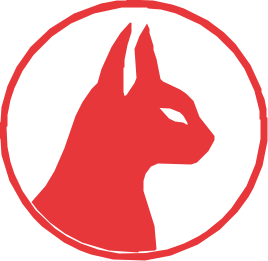
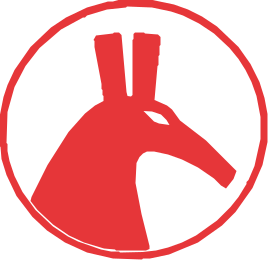
12 образов · исходные имена сохранены
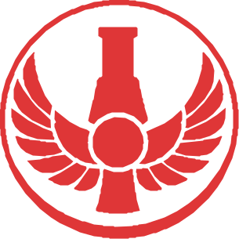
Опубликованный пул полностью соответствует скачанному набору.
1EDzc6O5Hoxfymjmn9axY5zs9vJ9nJRVgassets/svg/pantheon/manifest.csv.